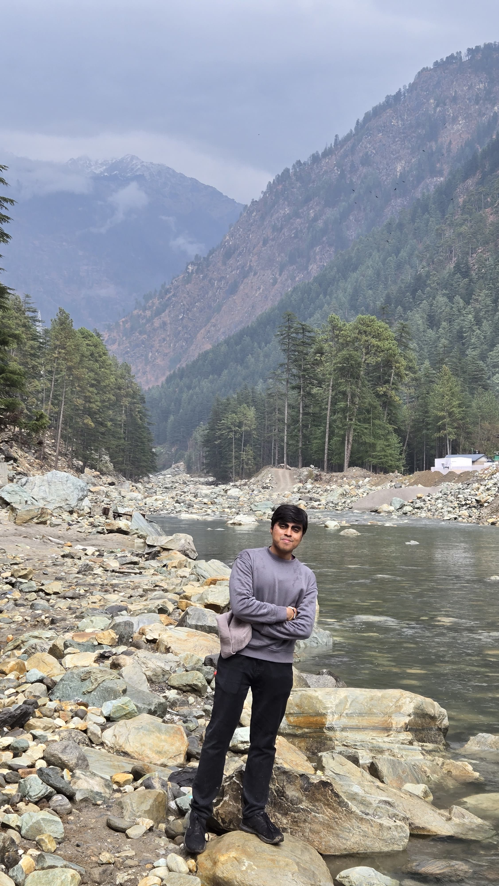
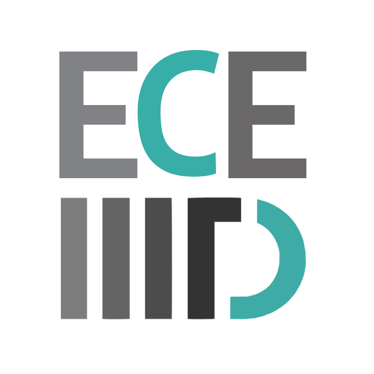
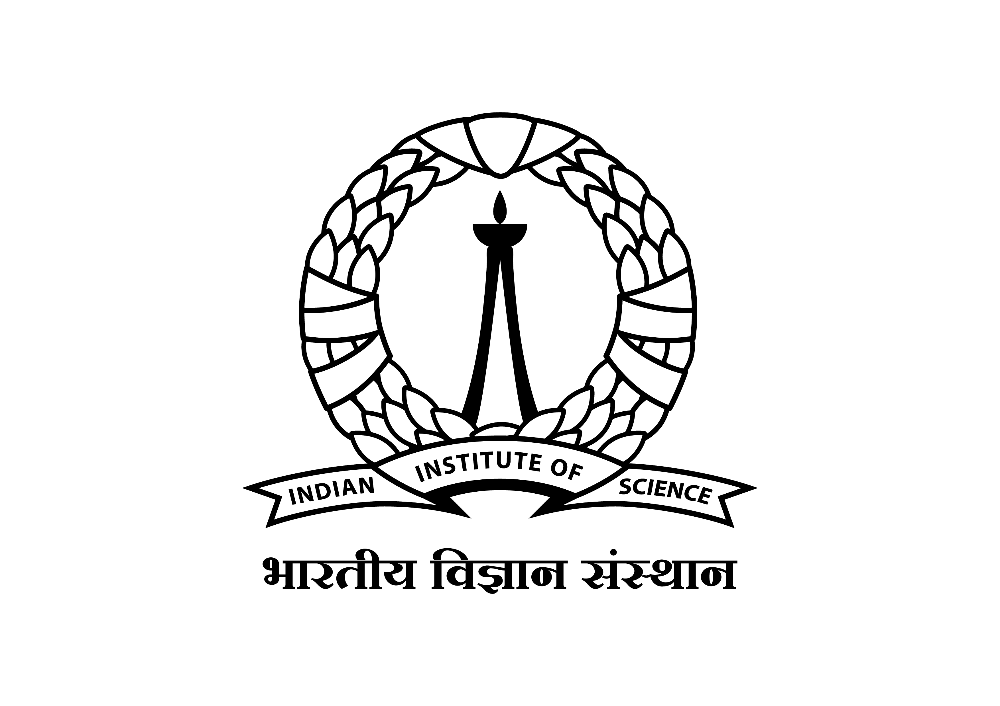

Radar Signal Processing | mmWave Sensing | Applied Electromagnetics
Research Associate, Department of ECE, IIIT Delhi
Hi! I am Ayush, I am a Research Associate in the Department of Electronics and Communication Engineering at IIIT Delhi, working on millimeter-wave radar-based foreign object debris detection for airport runway safety, in collaboration with the Indian Air Force, the air arm of the Indian Armed Forces
My research interests span radar signal processing, mmWave radar sensing, target detection and estimation, signal processing, sparse reconstruction, computational electromagnetics, antennas, RF systems, surrogate modelling,
I received my Bachelor of Technology in Electronics and Communication Engineering from Manipal Institute of Technology in 2024. My bachelor’s thesis focused on designing surrogate models for electromagnetic compatibility analysis of power electronic circuits.

Working on 77 GHz FMCW radar-based foreign object debris detection for airport runway safety using TI AWR1843BOOST radar platforms.
My work involves BPM-MIMO radar processing, range-angle processing, clutter suppression, low-rank and sparse decomposition, ADMM-based optimization, and OS-CFAR detection.
Worked on Gaussian Process-based surrogate modelling for electromagnetic compatibility analysis of power electronic circuits.

Worked on surrogate modelling, uncertainty quantification, and multi-objective optimization for EMI filter insertion loss prediction.
I am interested in PhD opportunities and research collaborations in the field(s) of radar signal processing, radar systems, mmWave sensing, applied electromagnetics, signal processing, sparse reconstruction, and learning-based sensing
Email: ayush2003shukla@gmail.com
GitHub: github.com/ayush03shukla
LinkedIn: LinkedIn
CV: Download CV